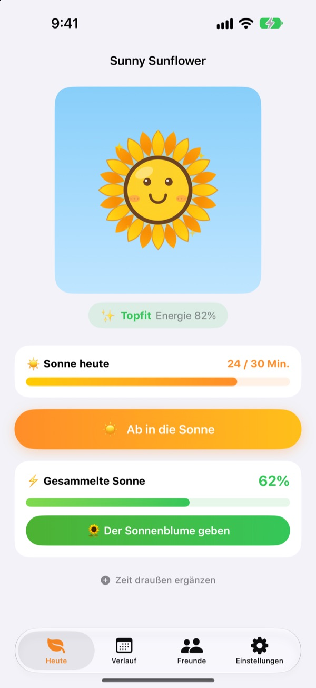
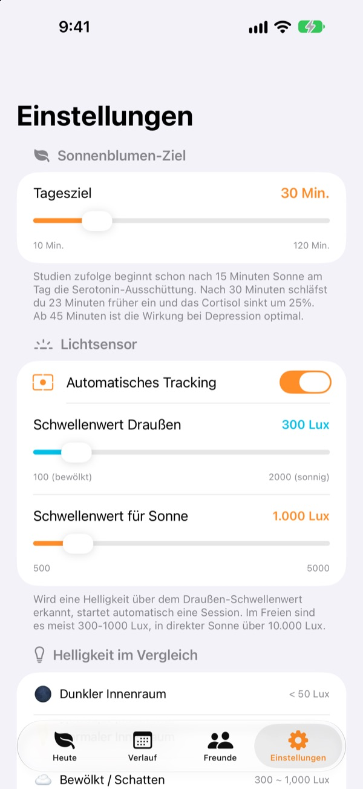
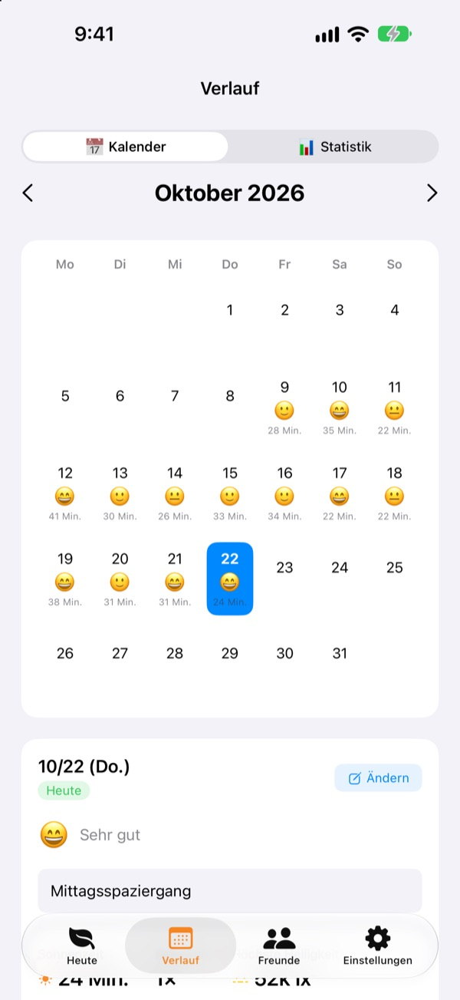
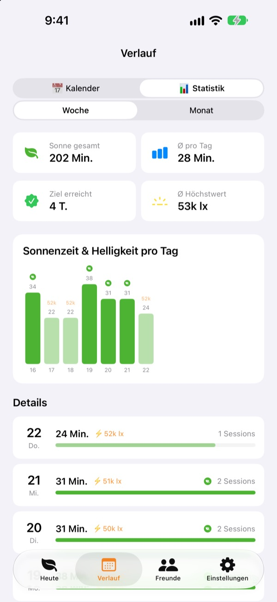

Mit der Sonne von heute
wächst deine Sonnenblume
Sobald du draußen bist, zählt deine Sonnenzeit von allein mit. Gib die gesammelte Sonne deiner Sonnenblume, dann blüht sie auf. Vergisst du sie ein paar Tage, beginnt sie zu welken.
Alle Funktionen sind kostenlos. Deine Daten bleiben auf dem Gerät.

Sammle ein bisschen Sonne
Wähle, wie hell es ist und wie lange, tank Sonne und gib sie einer Sonnenblume, die schon die Blätter hängen lässt.
Wie viele Minuten Sonne hattest du heute?
Ein paar Schritte auf dem Weg zur Arbeit, kurz raus zum Mittagessen. Wer den ganzen Tag drinnen ist, merkt oft erst abends, dass er kaum Tageslicht gesehen hat. Sunny Sunflower macht deine Zeit draußen sichtbar, und deine Sonnenblume wartet schon auf den Spaziergang morgen.
Raus gehen genügt, sie misst von selbst
Tippe auf Ab in die Sonne und geh nach draußen. Die App schätzt die Helligkeit um dich herum anhand der Belichtungsdaten der Frontkamera. Bleibt es etwa 30 Sekunden lang so hell wie draußen, beginnt die Aufzeichnung. Es werden nie Fotos gemacht oder gespeichert.
Danach schaltet sich der Sensor nur alle 2 Minuten für 20 Sekunden ein und schont so den Akku.

Sonne und Stimmung, Tag für Tag
Im Kalender bekommt jeder Tag seine Sonnenzeit, ein Stimmungs-Emoji und eine kurze Notiz. Warst du draußen, ohne zu messen? Mit Zeit draußen ergänzen trägst du 5 bis 120 Minuten nach.

Woche und Monat auf einen Blick
Wochen- und Monatsstatistiken zeigen, an welchen Tagen du dein Ziel erreicht hast und wie viel Sonne du im Schnitt bekommst. Setz dir ein Tagesziel zwischen 10 und 120 Minuten und sieh direkt auf dem Startbildschirm, wie viel heute noch fehlt.
Widgets auf Home- und Sperrbildschirm sowie die Dynamic Island zeigen die Sonne von heute und wie es deiner Sonnenblume geht.

In drei Schritten startklar
- 1
Tagesziel festlegen
Voreingestellt sind 30 Minuten. In den Einstellungen geht alles von 10 bis 120.
- 2
Raus in die Sonne
Tippe auf
Ab in die Sonneund geh mit geöffneter App nach draußen. Der Kamerazugriff wird nur einmal abgefragt. - 3
Sonnenblume füttern
Mit
Der Sonnenblume gebenwird aus gesammelter Sonne Energie.
So wird aus Licht gesammelte Sonne
- Unter 300 Lux
- Schwaches Licht: zählt nicht als Sonnenzeit
- 300 bis 1.000 Lux
- Draußen/bewölkt: 1 bis 3 % pro 10 Minuten
- 1.000 bis 10.000 Lux
- Sonne: 3 bis 33 % pro 10 Minuten
- Ab 10.000 Lux
- Starke Sonne: über 33 % pro 10 Minuten
- Gesammelte Sonne
- Minuten × durchschnittliche Lux ÷ 3.000 (höchstens 100 % pro Sitzung)
- Energie der Sonnenblume
- sinkt um 2,5 % pro Stunde, etwa 60 % pro Tag
Den Schwellenwert für draußen kannst du in den Einstellungen zwischen 100 und 2.000 Lux wählen. Voreingestellt sind 300 Lux.
Häufige Fragen
Wie misst die App die Sonne?
Sie schätzt die Helligkeit um dich herum (Beleuchtungsstärke) anhand der Belichtungsdaten der Frontkamera. Bleibt es eine Weile so hell wie draußen, startet die Aufzeichnung von selbst. Es werden keine Fotos gemacht oder gespeichert.
Kostet das Messen viel Akku?
Sobald Sonne erkannt ist, bleibt der Sensor nicht dauerhaft an. Er misst alle 2 Minuten etwa 20 Sekunden lang nach, den Rest übernimmt ein einfacher Timer.
Meine Sonnenblume welkt ständig.
Die Sonnenblume verliert pro Stunde 2,5 % Energie. Sammle Sonne und tippe auf Der Sonnenblume geben. An einem klaren Tag reichen 15 bis 20 Minuten in direkter Sonne, um einen ganzen Tag auszugleichen.
Ich war draußen, aber nichts wurde aufgezeichnet.
Mit Zeit draußen ergänzen unten auf dem Startbildschirm kannst du 5 bis 120 Minuten nachtragen. Startet die Aufzeichnung an bewölkten Tagen schlecht, senk den Schwellenwert für draußen in den Einstellungen.
Wie funktioniert die Freunde-Funktion?
Seid ihr nah beieinander (etwa 10 m) und messt beide gerade Sonne, verbindet ihr euch automatisch. Bei neuen Personen müsst ihr das gemeinsame Sonnentanken erst bestätigen, danach geht es automatisch. Eure Blütenblätter werden bunt und bekommen über 3 Tage ihre Farbe zurück, und eure gemeinsame Zeit landet im Tab Freunde. Ihr braucht beide die App sowie Zugriff auf Bluetooth und das lokale Netzwerk.
Ist das wirklich kostenlos?
Ja. Keine Werbung, keine Käufe, alle Funktionen inklusive. Wenn dir die App gefällt, kannst du ein Trinkgeld geben, es schaltet aber nichts zusätzlich frei.
Kann ich meine Daten sichern oder übertragen?
Alles bleibt ohne Server auf deinem Gerät, gespeichert werden die letzten 90 Tage. Einen eigenen Export gibt es nicht, deine Daten sind aber im normalen iPhone-Backup über iCloud oder den Computer enthalten.
Wie lösche ich alle Daten?
Tippe in den Einstellungen der App auf Daten zurücksetzen oder lösche die App. Das lässt sich nicht rückgängig machen.
Wo melde ich einen Fehler?
Schreib an die Adresse unten oder eröffne ein Issue auf GitHub (github.com/M1zz/SunlightTracker/issues). Gerätemodell, iOS-Version und was genau passiert ist, helfen sehr. Meist antworten wir innerhalb weniger Tage.
Fragen oder Feedback? Schreib an leeo@kakao.com.